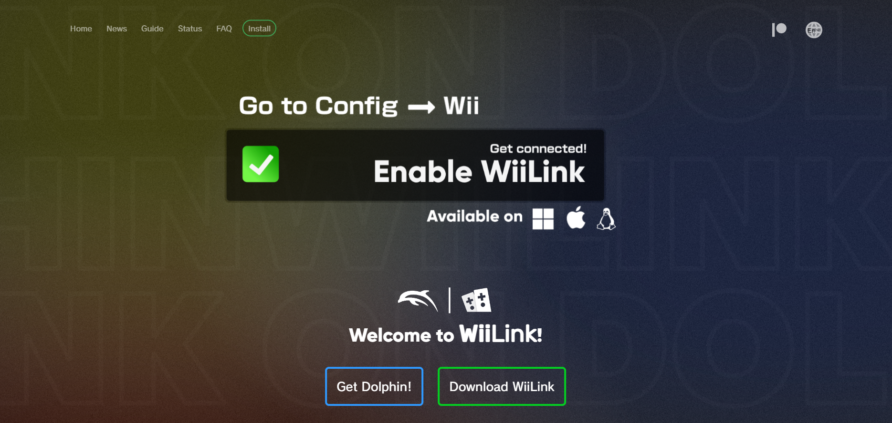

What is WiiLink?
WiiLink in their words resurects many differnt channels.They currently support these channels:
- Wii Room
- Photo Prints Channel
- Kirby TV Channel
- Food Channel
- Forecast Channel
- Nintendo Channel
- TV Guide Channel
How do I download this?
Thankfully downloading WiiLink is quite easy if you follow our guide!
First your going to want to go the the WiiLink website
It should look something like this 
Click Install on the top bar and click on your OS